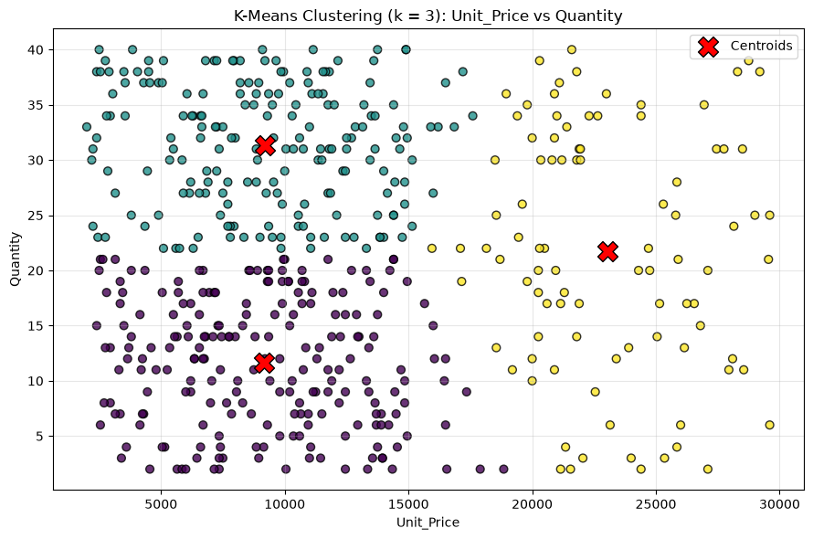
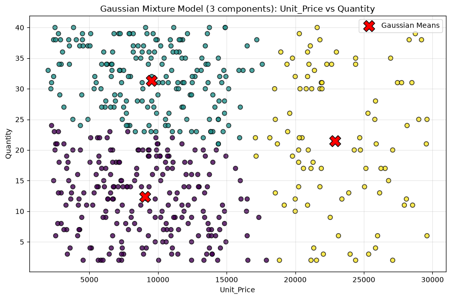
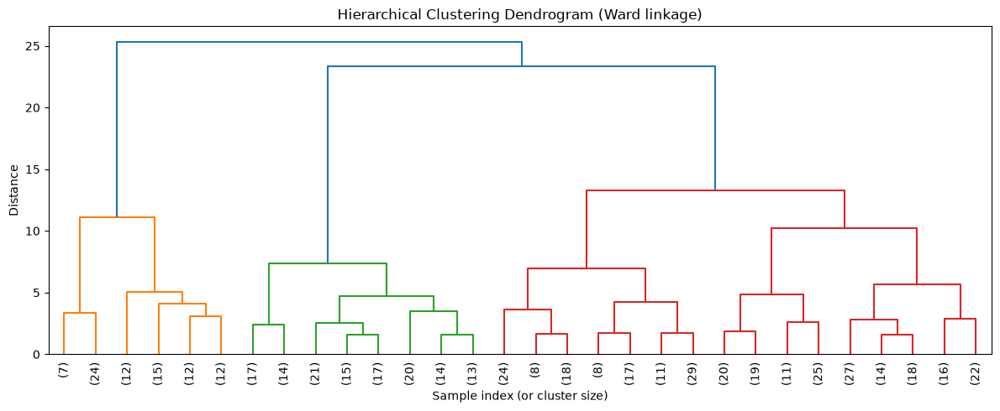
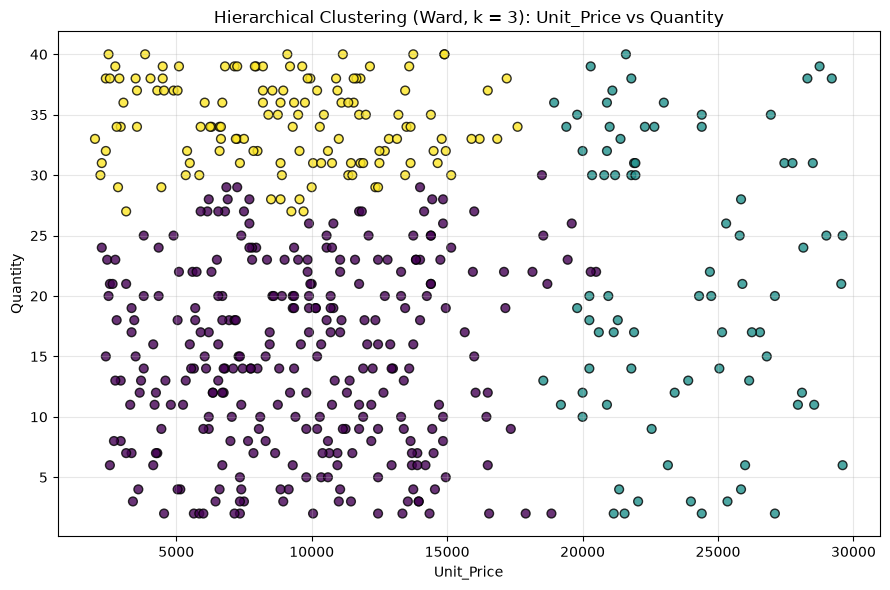
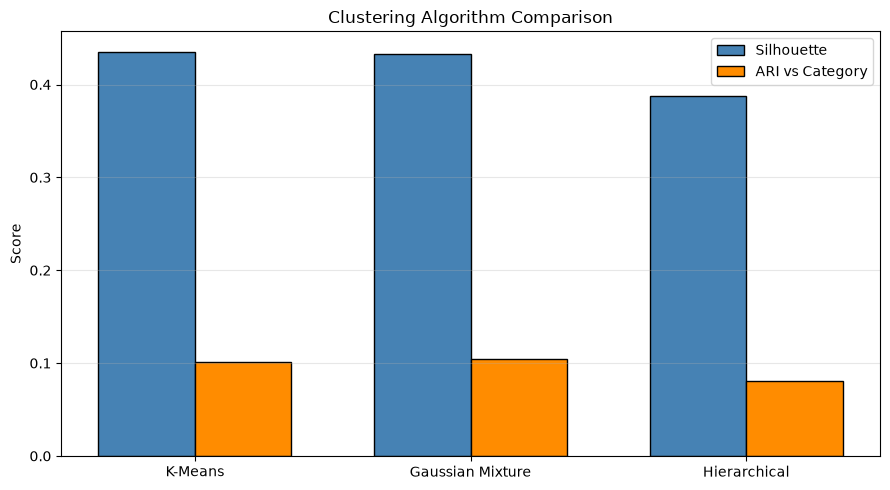

Retail Sales Insights Using Clustering and PCA
K-Means, Gaussian Mixture and Hierarchical Clustering
Dataset: store_sales_dataset.csv
We group the orders into clusters using Quantity and Unit_Price with three unsupervised algorithms:
- K-Means
- Gaussian Mixture Model (mixture of Gaussians)
- Hierarchical (Agglomerative) Clustering
Category is not used for training. It is only used afterwards to check how well the clusters match the real categories.
1. Import libraries
Show code
import pandas as pd
import numpy as np
import matplotlib.pyplot as plt
from scipy.cluster.hierarchy import linkage, dendrogram
from sklearn.preprocessing import StandardScaler
from sklearn.cluster import KMeans, AgglomerativeClustering
from sklearn.mixture import GaussianMixture
from sklearn.metrics import silhouette_score, adjusted_rand_score
%matplotlib inline2. Load data
Show code
df = pd.read_csv("store_sales_dataset.csv")
print(f"Dataset size: {len(df)} rows")
df.head()Dataset size: 500 rows
| Order_ID | Product | Category | City | Quantity | Unit_Price | Total_Sales | |
|---|---|---|---|---|---|---|---|
| 0 | 101 | Smartphone | Electronics | Hyderabad | 5 | 12450 | 62250 |
| 1 | 102 | USB Cable | Accessories | Delhi | 2 | 4550 | 9100 |
| 2 | 103 | Television | Electronics | Mumbai | 38 | 11800 | 448400 |
| 3 | 104 | Power Bank | Accessories | Hyderabad | 12 | 6750 | 81000 |
| 4 | 105 | Webcam | Accessories | Bangalore | 34 | 2950 | 100300 |
3. Prepare and standardize the features
Both features are standardized (mean = 0, std = 1) so they have equal weight.
Show code
features = ["Quantity", "Unit_Price"]
X = df[features]
scaler = StandardScaler()
X_scaled = scaler.fit_transform(X)
print(f"Features used for clustering: {features}")Features used for clustering: ['Quantity', 'Unit_Price']
4. Choosing the number of clusters (Elbow method + Silhouette score)
Show code
k_values = range(2, 9)
inertias = []
silhouettes = []
print(f" {'k':>3} {'Inertia':>12} {'Silhouette':>12}")
for k in k_values:
km = KMeans(n_clusters=k, n_init=10, random_state=42)
labels = km.fit_predict(X_scaled)
inertias.append(km.inertia_)
silhouettes.append(silhouette_score(X_scaled, labels))
print(f" {k:>3} {km.inertia_:>12.2f} {silhouettes[-1]:>12.4f}")
best_k = list(k_values)[int(np.argmax(silhouettes))]
print(f"\nBest k by silhouette score: {best_k}") k Inertia Silhouette
2 626.59 0.3675
3 351.55 0.4355
4 281.85 0.4012
5 224.62 0.3603
6 179.95 0.3845
7 150.08 0.3789
8 129.58 0.3745
Best k by silhouette score: 35. K-Means clustering
Show code
kmeans = KMeans(n_clusters=best_k, n_init=10, random_state=42)
kmeans_labels = kmeans.fit_predict(X_scaled)
centers = scaler.inverse_transform(kmeans.cluster_centers_)
print(f"K-Means (k = {best_k}) cluster centers (original units):")
pd.DataFrame(centers, columns=features).round(2)K-Means (k = 3) cluster centers (original units):
| Quantity | Unit_Price | |
|---|---|---|
| 0 | 11.66 | 9172.56 |
| 1 | 31.35 | 9214.06 |
| 2 | 21.72 | 23048.92 |
Graph: K-Means clusters
Show code
plt.figure(figsize=(9, 6))
plt.scatter(
df["Unit_Price"],
df["Quantity"],
c=kmeans_labels,
cmap="viridis",
edgecolor="black",
s=40,
alpha=0.8,
)
plt.scatter(
centers[:, 1],
centers[:, 0],
color="red",
marker="X",
s=250,
edgecolor="black",
label="Centroids",
)
plt.xlabel("Unit_Price")
plt.ylabel("Quantity")
plt.title(f"K-Means Clustering (k = {best_k}): Unit_Price vs Quantity")
plt.legend()
plt.grid(True, alpha=0.3)
plt.tight_layout()
plt.show()
6. Gaussian Mixture Model
Show code
gmm = GaussianMixture(n_components=best_k, covariance_type="full", random_state=42)
gmm.fit(X_scaled)
gmm_labels = gmm.predict(X_scaled)
gmm_probs = gmm.predict_proba(X_scaled)
print("Mixture weights:")
for i, w in enumerate(gmm.weights_):
print(f" Component {i}: {w:.4f}")
gmm_means = scaler.inverse_transform(gmm.means_)
print("\nComponent means (original units):")
print(pd.DataFrame(gmm_means, columns=features).round(2).to_string())
print(f"\nConverged: {gmm.converged_}")
print(f"Log-likelihood (per sample): {gmm.score(X_scaled):.4f}")
print(f"BIC: {gmm.bic(X_scaled):.2f}")
print(f"AIC: {gmm.aic(X_scaled):.2f}")Mixture weights: Component 0: 0.4446 Component 1: 0.3718 Component 2: 0.1836 Component means (original units): Quantity Unit_Price 0 12.39 9036.62 1 31.30 9540.81 2 21.50 22903.59 Converged: True Log-likelihood (per sample): -2.6536 BIC: 2759.27 AIC: 2687.62
Soft assignments: membership probabilities (first 10 rows)
Show code
prob_df = pd.DataFrame(
np.round(gmm_probs, 4),
columns=[f"P(Comp {i})" for i in range(best_k)],
)
prob_df.insert(0, "Unit_Price", df["Unit_Price"].values)
prob_df.insert(0, "Quantity", df["Quantity"].values)
prob_df.head(10)| Quantity | Unit_Price | P(Comp 0) | P(Comp 1) | P(Comp 2) | |
|---|---|---|---|---|---|
| 0 | 5 | 12450 | 0.9969 | 0.0001 | 0.0030 |
| 1 | 2 | 4550 | 1.0000 | 0.0000 | 0.0000 |
| 2 | 38 | 11800 | 0.0005 | 0.9962 | 0.0033 |
| 3 | 12 | 6750 | 0.9981 | 0.0019 | 0.0000 |
| 4 | 34 | 2950 | 0.0083 | 0.9917 | 0.0000 |
| 5 | 15 | 26800 | 0.0001 | 0.0001 | 0.9998 |
| 6 | 4 | 13750 | 0.9893 | 0.0001 | 0.0106 |
| 7 | 18 | 6950 | 0.9436 | 0.0563 | 0.0000 |
| 8 | 22 | 5100 | 0.7171 | 0.2829 | 0.0000 |
| 9 | 21 | 14400 | 0.4475 | 0.4848 | 0.0677 |
Graph: Gaussian Mixture clusters
Show code
plt.figure(figsize=(9, 6))
plt.scatter(
df["Unit_Price"],
df["Quantity"],
c=gmm_labels,
cmap="viridis",
edgecolor="black",
s=40,
alpha=0.8,
)
plt.scatter(
gmm_means[:, 1],
gmm_means[:, 0],
color="red",
marker="X",
s=250,
edgecolor="black",
label="Gaussian Means",
)
plt.xlabel("Unit_Price")
plt.ylabel("Quantity")
plt.title(f"Gaussian Mixture Model ({best_k} components): Unit_Price vs Quantity")
plt.legend()
plt.grid(True, alpha=0.3)
plt.tight_layout()
plt.show()
7. Hierarchical (Agglomerative) clustering with Ward linkage
Show code
hier = AgglomerativeClustering(n_clusters=best_k, linkage="ward")
hier_labels = hier.fit_predict(X_scaled)
print(f"Hierarchical clustering done with k = {best_k}")Hierarchical clustering done with k = 3
Graph 1: Dendrogram
Show code
linkage_matrix = linkage(X_scaled, method="ward")
plt.figure(figsize=(12, 5))
dendrogram(linkage_matrix, truncate_mode="lastp", p=30, leaf_rotation=90)
plt.xlabel("Sample index (or cluster size)")
plt.ylabel("Distance")
plt.title("Hierarchical Clustering Dendrogram (Ward linkage)")
plt.tight_layout()
plt.show()
Graph 2: Hierarchical clusters
Show code
plt.figure(figsize=(9, 6))
plt.scatter(
df["Unit_Price"],
df["Quantity"],
c=hier_labels,
cmap="viridis",
edgecolor="black",
s=40,
alpha=0.8,
)
plt.xlabel("Unit_Price")
plt.ylabel("Quantity")
plt.title(f"Hierarchical Clustering (Ward, k = {best_k}): Unit_Price vs Quantity")
plt.grid(True, alpha=0.3)
plt.tight_layout()
plt.show()
8. Evaluation and comparison
- Silhouette score: cluster quality (higher is better, max 1)
- Adjusted Rand Index (ARI): agreement with the real
Category(1 = perfect, 0 = random)
Show code
results = {
"K-Means": kmeans_labels,
"Gaussian Mixture": gmm_labels,
"Hierarchical": hier_labels,
}
rows = []
for name, labels in results.items():
rows.append({
"Algorithm": name,
"Silhouette": round(silhouette_score(X_scaled, labels), 4),
"ARI vs Category": round(adjusted_rand_score(df["Category"], labels), 4),
})
scores_df = pd.DataFrame(rows)
scores_df| Algorithm | Silhouette | ARI vs Category | |
|---|---|---|---|
| 0 | K-Means | 0.4355 | 0.1016 |
| 1 | Gaussian Mixture | 0.4330 | 0.1049 |
| 2 | Hierarchical | 0.3873 | 0.0802 |
Show code
for name, labels in results.items():
print(f"\n{name} - cluster sizes and Category breakdown:")
print(pd.crosstab(labels, df["Category"], rownames=["Cluster"]).to_string())K-Means - cluster sizes and Category breakdown: Category Accessories Electronics Cluster 0 132 83 1 118 74 2 0 93 Gaussian Mixture - cluster sizes and Category breakdown: Category Accessories Electronics Cluster 0 142 81 1 108 76 2 0 93 Hierarchical - cluster sizes and Category breakdown: Category Accessories Electronics Cluster 0 169 118 1 0 82 2 81 50
Graph: Silhouette and ARI comparison
Show code
x = np.arange(len(scores_df))
width = 0.35
plt.figure(figsize=(9, 5))
plt.bar(x - width / 2, scores_df["Silhouette"], width, label="Silhouette",
color="steelblue", edgecolor="black")
plt.bar(x + width / 2, scores_df["ARI vs Category"], width, label="ARI vs Category",
color="darkorange", edgecolor="black")
plt.xticks(x, scores_df["Algorithm"])
plt.ylabel("Score")
plt.title("Clustering Algorithm Comparison")
plt.legend()
plt.grid(True, axis="y", alpha=0.3)
plt.tight_layout()
plt.show()
9. Sample prediction (new data point)
Show code
sample = pd.DataFrame({"Quantity": [10], "Unit_Price": [20000]})
sample_scaled = scaler.transform(sample)
print("Quantity=10, Unit_Price=20000")
print(f" K-Means cluster: {kmeans.predict(sample_scaled)[0]}")
print(f" Gaussian Mixture cluster: {gmm.predict(sample_scaled)[0]}")
print(f" GMM probabilities: {np.round(gmm.predict_proba(sample_scaled)[0], 4)}")Quantity=10, Unit_Price=20000 K-Means cluster: 2 Gaussian Mixture cluster: 2 GMM probabilities: [0.1529 0.0013 0.8458]